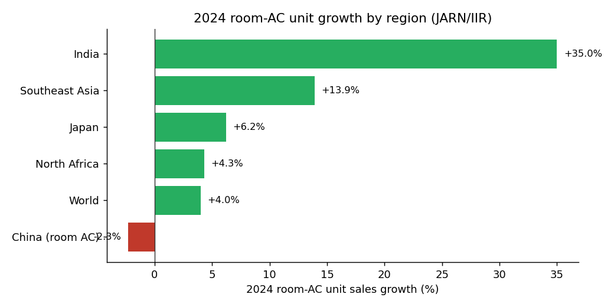
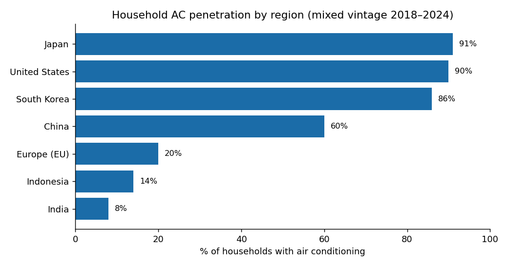

4 How big the market is, and how fast it is growing
4.1 The headline growth story (IEA) — and its limits
The most credible top-down framing comes from the International Energy Agency. Its Future of Cooling analysis projects the global stock of air conditioners growing from roughly 1.6 billion units (c. 2018) to about 5.6 billion by 2050, with global electricity demand for space cooling tripling over the same period (International Energy Agency, 2018, 2024). By 2050 about two-thirds of the world’s households could own an AC, with China, India, and Indonesia accounting for roughly half of the global total.
As flagged in the preface, that stock projection is only about a 4% compound annual growth rate — and as a stock measure it decelerates as saturation rises. So the IEA number is the right backdrop but the wrong number to get excited about. The investable growth is faster than 4% in two places the unit count hides: value/mix (each unit sells for more) and specific regions and sub-segments (emerging-Asia adoption, European electrification, data-center cooling).
4.2 Do recent, independent forecasts tell the same story? Broadly yes
Pulling together recent (2024–2026) estimates, the sources are reasonably consistent on growth rate even though they disagree wildly on absolute market size (because they define “the market” differently — room AC only vs. full HVAC systems vs. including services). The consensus is roughly 5–7.6% annual dollar growth, clustering near 6%.
| Source | Scope | Base | Forecast | CAGR |
|---|---|---|---|---|
| JARN / IIR (hard unit data) | Global room AC units | 140.6M units (2024) | — | +4% units in 2024 |
| MarketsandMarkets | HVAC systems | $299B (2025) | $408B (2030) | 6.4% |
| BCC Research | HVAC | $264B (2023) | $347B (2028) | 5.6% |
| Fortune Business Insights | Air conditioners | $137B (2025) | $246B (2034) | 6.8% |
| IMARC | AC systems | $131B (2025) | $210B (2034) | 5.1% |
| market.us | AC systems | $161B (2024) | $293B (2034) | 6.2% |
| Emergen Research | Air conditioners | $131B (2024) | $272B (2034) | 7.6% |
The reconciliation is clean: ~4% unit growth + price/mix richening ≈ ~6% dollar growth. Near-term dollar growth runs above the IEA’s long-run ~4% unit pace precisely because of the efficiency/heat-pump/refrigerant value uplift and front-loaded emerging-market adoption. Independent sources agree on this shape.1
4.3 The regional split: where growth actually is
This is the heart of the matter. Mature markets are replacement-driven and low-single-digit; emerging Asia is first-purchase-driven and double-digit. The 2024 unit data makes the divergence concrete:

data/ac_unit_growth_2024.csv.
The chart shows only regions with hard 2024 unit figures (JARN/IIR). Two big mature markets are omitted because only qualitative 2024 reads are available, but they matter for the story: the United States was low-single-digit (saturated, replacement-driven; ductless mini-splits actually fell ~3.7%), and Europe was sluggish on a cool summer — with European heat-pump sales down ~22% (a subsidy/gas-price effect, not a structural one). Treat both as “roughly flat in 2024,” not zero growth.
- India: +35% (room-AC sales up ~50% during the early-2024 heatwave), ~12.5M units — the fastest-growing major market, off very low penetration.
- Southeast Asia: +13.9%. The IEA projects SE Asia’s AC stock rising nine-fold from 2020 to 2040; Indonesia’s ownership (14% in 2023) could reach ~85% by 2050.
- Japan: +6.2% — but >90% penetrated, so this is replacement demand in a record-hot summer.
- China: room AC −2.3% domestically in 2024 (property weakness) even as exports rose ~30%; the 2025 cooling year then rebounded ~+10.8%. China is the volume-and-export giant, more cyclical than growthy on domestic penetration.
- United States: low-single-digit, essentially all replacement (>90% saturated); the swing factor is the refrigerant/efficiency cycle, not new adoption.
- Europe: sluggish in 2024 (cool summer) but structurally the highest-optionality region — see below.

data/ac_penetration_by_region.csv.
The canonical generator is scripts/make_figures.py — run python scripts/make_figures.py from the repo root (requires matplotlib) to regenerate both PNGs in figures/ from the CSVs in data/. Equivalent R, if you prefer:
library(ggplot2); library(readr); library(dplyr)
pen <- read_csv("data/ac_penetration_by_region.csv")
ggplot(pen, aes(reorder(region, penetration_pct), penetration_pct)) +
geom_col(fill = "#1b6ca8") +
geom_text(aes(label = paste0(penetration_pct, "%")), hjust = -0.15, size = 3) +
coord_flip(ylim = c(0, 100)) +
labs(x = NULL, y = "% of households with AC",
title = "Household AC penetration by region (2018–2024)") +
theme_minimal()
growth <- read_csv("data/ac_unit_growth_2024.csv")
ggplot(growth, aes(reorder(region, growth_pct), growth_pct,
fill = growth_pct > 0)) +
geom_col() + coord_flip() +
scale_fill_manual(values = c(`TRUE` = "#27ae60", `FALSE` = "#c0392b"), guide = "none") +
labs(x = NULL, y = "2024 room-AC unit growth (%)") + theme_minimal()Data caveat. The IEA penetration figures are mixed-vintage: the U.S., Japan, Korea, China, and India values are ~2018 (from The Future of Cooling); Europe (~20%) is a 2024 IEA figure; Indonesia (14%) is 2023. Exact per-country values on the IEA chart pages require downloading the chart CSV from the IEA site; the numbers here are from the report narrative and IEA commentaries and should be refreshed if precision matters. China and India in particular have risen since 2018.
4.4 Residential vs. commercial
By unit volume and most revenue estimates, residential is the larger end-use segment, but commercial/applied carries higher engineering content, more service and aftermarket revenue, and — for data centers — the fastest growth. For an investor, the commercial/applied tilt usually means stickier revenue and higher-quality earnings, which is part of why pure-play commercial names (Trane) command premium multiples. Data-center cooling is large enough and distinct enough that it gets its own chapter.
4.5 U.S. vs. Europe: two very different penetration stories
The U.S. and Europe are almost mirror images:
- United States — saturated, replacement-driven. ~90% of households have AC, so demand is dominated by replacement and efficiency/refrigerant upgrades. Large, stable, tied to the regulatory and housing cycles.
- Europe — low penetration, policy-driven runway. Only ~20% of European homes have AC (IEA, 2024–25), and the heat-pump story is even more policy-sensitive. **European heat-pump sales actually *fell ~22% in 2024, to ~2.3M units, after subsidies were cut and gas prices normalized 2 — but the policy backdrop is the bull case: the EU is running roughly 15M heat pumps short of its 60M-by-2030 target**, and ETS2 carbon pricing on heating (from 2027), the Social Climate Fund, and the phase-out of fossil-boiler subsidies all point to a structural rebound. Germany’s heat-pump association expects >30% sales growth resuming.
4.5.1 Who is positioned for European growth (your specific interest)
European heat-pump and AC growth concentrates among a recognizable set. In the German hydronic heat-pump market, Vaillant, NIBE, Viessmann (now owned by Carrier), Stiebel Eltron, and Daikin together hold ~60% share; across the broader European heat-pump market, Daikin, Carrier (Viessmann), Bosch, Panasonic, and Mitsubishi Electric are cited at roughly 44% combined 3. A localization tailwind favors incumbents with EU plants: ~73% of heat pumps sold in Europe are made in Europe. The cleanest listed ways to own European cooling/heat-pump growth are therefore Carrier (via Viessmann), Daikin (Tokyo), NIBE (Stockholm: NIBE-B), and Mitsubishi Electric (Tokyo); Bosch and Vaillant are private. This is developed further in the company chapters.
Investor takeaway. Two distinct opportunity types: (1) U.S. replacement + upgrade — defensive, high-margin, regulation-pulled (Carrier/Trane/Lennox); and (2) emerging-market and European first-time adoption / electrification — higher unit growth, exposed to Daikin, Carrier/Viessmann, NIBE, Mitsubishi, and the Asian volume makers (Midea, Gree, Haier). A stock’s growth profile depends heavily on which of these it is levered to.
Open question: Want a dedicated short page on NIBE and the European heat-pump pure-plays (NIBE, plus private Vaillant/Bosch/Stiebel for context), given your specific interest in European growth? NIBE is the most direct listed Europe-heat-pump bet and isn’t on the core U.S. list.
Unit data: IIR/JARN, “Global air conditioner market 2024 performance,” https://iifiir.org/en/news/global-air-conditioner-market-2024-performance. Dollar forecasts compiled from MarketsandMarkets (https://www.marketsandmarkets.com/Market-Reports/hvac-system-market-202111288.html), BCC Research, Fortune Business Insights (https://www.fortunebusinessinsights.com/air-conditioners-market-102556), IMARC, market.us, Emergen Research. BSRIA’s Global HVAC Outlook (https://www.bsria.com/uk/news/article/global_hvac_market_outlook_20242025_highlights_/) is the leading non-paywalled industry source if you want one primary read.↩︎
European Heat Pump Association, Market Report 2025 (executive summary), https://www.ehpa.org/wp-content/uploads/2025/07/EHPA-Market-Report-2025-executive-summary.pdf; pv-magazine, “Heat-pump sales dropped across large European markets in 2024,” https://www.pv-magazine.com/2025/02/20/heat-pump-sales-dropped-across-large-european-markets-in-2024/.↩︎
European Heat Pump Association Market Report 2025; market-share commentary compiled from EHPA and JRC sources. Treat shares as approximate.↩︎